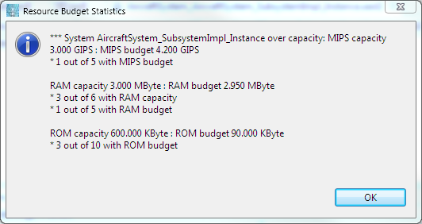

The analysis plugins designed by the SEI are available in the Analyses, as shown in the picture below. These plugins mostly act on the instance model and thus you need to select the instance model and the root system instance when invoking these plugins.

Most of the plugins report errors and information in the Eclipse Problems view. For this reason, this is always worth to activate this view when using the validation plug-ins. You can activate this view by selecting the following menus: Window, Show View and then Problems, as shown in the following picture.

Eclipse classifies Marker information into different categories: errors, warning and information. By default the Eclipse problem view only shows errors, so you may not see the results of an analysis if no errors are involved.
You can change the default setting by following the instructions at Eclipse Basics.
This analysis is applicable to AADL specifications and system instances. It is invoked using �Analyses > Architecture > Model statistics� in the menu bar or the button in the toolbar.
This analysis collects model statistics of two kinds and can be invoked on both declarative AADL models and AADL instance models. In both cases it keeps track of the number of declarations of different kinds in all declarative model files in the workspace. When invoked on an AADL instance model it also keeps track of components of different categories, connections, flows, etc. of the instance model. Figure 27 illustrates how the model statistics plug-in reports its results both through a dialog box and as information markers in the �Problems� view.
This plug-in aims at making statistics on your model: number of components, categories of components, etc. This plug-in is more a support for new plug-in developer and start with an established code base they can re-use.
Once the analysis is done, a report is generated in the reports/ directory, in the root directory of the AADL project. On completion, the plug-in also a dialog that summarizes the result of the analysis (as shown below).

When the system is being analyzed, the following properties are analyzed:
These properties are associated to the following elements:
This analysis checks whether the miss rates in streams communicated through ports are consistent, i.e., the miss rate of an out port does not exceed the miss rate of an in port. The miss rate of an out port represents the maximum miss rate of the generated stream through this port. The miss rate in an in port represents the maximum miss rate that a component is willing to handle. This analysis is invoked using Analyses > Architecture > Check Miss Rates in the menu bar or the button in the toolbar. It may only be applied to AADL Specifications. Miss rates are specified on ports using the property SEI::StreamMissRate, a aadlreal- valued property defined in the SEI property set, i.e.,
Property set SEI is StreamMissRate: aadlreal applies to (port); End SEI;
The analysis performs this check for all connections if either or both the source or destination ports have a value for this property. The check can be invoked on an AADL XML file, or on any of the AADL model objects in the AADL Object Editor. In both cases it is applied to all connections in the AADL model. A connection is reported if the miss rate of the destination port is lower than the miss rate of the source port of any connection. You can use this analysis on any AADL model that has property values for this property associated with some of its ports.
A code snippet from the SunseekerDemo example:
process Sunseekerplant_Type
features
Controllerinput : in data port Beacon_Standard::Single_Float;
Outputfeedback : out data port Beacon_Standard::Single_Float
{ SEI::StreamMissRate => 0.06;};
This function extracts the property SEI::BandWidthCapacity on each bus. Then, the function retrieves the bandwidth required by each connection bound to this bus and check that the bandwidth capacity of the bus is enough to provide enough capacity for its bound connections (port connections).
To do so, the function process each connection bound to the bus and computes the bandwidth budget for this connection:
Upon successful analysis, the plugin reports metrics in a dialog box, as shown in the following picture.

This function extracts the property SEI::BandWidthCapacity on each bus. Then, the function retrieves the bandwidth required by each connection bound to this bus and check that the bandwidth capacity of the bus is enough to provide enough capacity for its bound connections. It process connections between system, including port connection and bus access connections.
To do so, the function process each connection bound to the bus and computes the bandwidth budget for this connection:
The policy to get the data being transmitted on the bus is the following:
The functions also provides the ability to make an analysis on a per-mode basis: if a component that communicates is not active in a mode, then, the data it sends/receives is not taken into account.
Upon successful analysis, the plugin reports metrics in a dialog box, as shown in the following picture. It also produces reports in a CSV file format in a new report directory.

There are two forms of power related analyses. The first form utilizes classifier type checking on connections to identify mismatch in supplied and required power characteristics. In this case a bus models the power supply. It is defined with several implementations, each representing a different (set of) power characteristics. For example, we may have two implementations representing different voltages. Power consumers define requires bus access features choosing as classifier the desired power characteristics by naming the appropriate implementation. Once the bus access connection is established the AADL semantic checker will detect mismatching classifier names.
The second form of power related analysis models the power capacity of a physical system entity that is modeled by a bus. Power is drawn from this entity by components that are connected to it via bus access connection. The power supply scenario is one example. A second example is a bus such as USB that provides power to connected devices.
We have introduced two properties, PowerCapacity and PowerBudget, for that purpose. Its values are real with units of mW, W, KW for wattage (an equivalent measure could have been impedance). The PowerCapacity can be associated with Bus components, while PowerBudget is associated with the requires bus access feature of the consuming component. As before, the property value can be specified with the component type, the component implementation, the subcompone nt, or even component instances in the instance model.
The power consumption analysis is invoked through a toolbar command, or through the Analysis menu and the Architecture submenu.
The power consumption analysis totals up the drawn power on each of the bus instances that have a power capacity and compares it to the power capacity of that bus. The results are reported via dialog and Resource Analysis Markers.
This plug-in analyzes the system, using buses as a power cable with components providing or consuming power. When the system is being analyzed, the following properties are processed:
The intent of the resource allocation analysis is to take into cons ideration allocation decisions of application components to processors and to memory. The allocations are specified through the Actual_Processor_Binding and Actual_Memory_Binding properties. In addition, this analysis takes into account any specification of actual resource usage � if present, such as execution time of threads, or actual memory requirements of application source code. Both the processor allocation and memory allocation analysis are invoked through the Analyze Resource Allocation command, available through the toolbar or through the Analysis menu and the Architecture submenu.
Binding properties are specified in the properties section of the system implementation that contains both the execution platform and the application system. It is specified as a �contained� property association with its reference value being the path to the processor or memory and the applies to clause specifying the component in the containment hierarchy for which the property value is specified � also a path in the containment hierarchy. In other words, all binding information is kept in this property section and effectively represents a binding configuration. For example:
Actual_Processor_Binding => reference platform.MissionProcessor1 applies to App.FlightManager;
The Actual_Processor_Binding property can be associated with threads, thread groups, processes, or systems. In an architecture model of major subsystems represented by system subcomponents or process subcomponents the whole subsystem is allocated to a specific processor. If specified for a component with subcomponents, the property value applies to all subcomponents unless they have their own property association. This is due to the fact that Actual_Processor_Binding is defined as inherit.
For processor bindings the Resource Allocation Analysis works as follows. For each processor instance it identifies the application components that are bound to this processor. For each of these application components the analysis examines the budget specification (MIPSBudget) and the actual resource consumption specification in terms of a period (Period) and execution time (Compute_Execution_Time). If the latter are specified their values are converted into MIPS and compared to the budget. Discrepancies are reported. The actual values, or the budget if the actual does not exist, are totaled up and compared against the capacity of the processor to which the components are bound.
This allows the user to make allocation decisions by reflecting them in the actual processor binding property. Early in the development those decisions are validated in terms of MIPS budget specifications. Later in the development, when timing information about components is available it can be added into the model. This may be done for the whole model or for some of the application components. The actuals are compared against the budgets and are used in the totaling of the resource demand on a processor.
Note: The application system may have been defined as a nested set of components, each with a budget. As mentioned above the processor binding is inherited, i.e., both the parent and its children may have a processor binding value. In that case only the actual or budget MIPS of the children are totaled in order to avoid double counting of bound application component budgets.
For memory allocation analysis we have introduced a RAMActual and a ROMActual property. These properties allow users to specify the actual memory demands of application components. In case of nested application components with RAMActual or ROMActual property values, the actual value accounts for memory demands of that component only. In other words, contrary to the memory budget figures, the actual value does not represent a cumulative memory demand.
These two properties have been provided such that users can reflect actual memory usage, e.g., as reported by a compiler, without having to provide details. In the future the actual RAM and ROM values can be calculated automatically from more detailed specifications such as the Source_Code_Size and Source_Data_Size values on processes, threads, ports, data, and subcomponents. Similarly, the memory capacity can automatically be calculated from detailed memory specifications in terms of Word_Count and Word_Size.
The memory allocation analysis compares the actuals, if specified, against the budgets and compares the total actuals or budgets against the capacity of the memory to which they are bound.
Network bandwidth analysis is supported in two variants: analysis based on inferred binding of connections to buses; and analysis based on explicit binding of connections to buses. Each of the two variants supports taking into consideration loopback communication of connections within the same processor. In case of loopback communication, intra-processor communication is also routed through the network. This technique allows application components to be relocated to different processors without impacting the load on the network.
This analysis check the processor load (using MIPS budget and capacity), and the memory load (with the memory bound to the processes and using the RAM and ROM budget/capacities). It also check the bus load according to the bus bandwidth and its bound connections. When the system is being analyzed, the following properties are processed:
The intent of the resource budget analysis is to provide resource budgeting support early in the development life cycle. Users may have defined a system model that essentially is a high level parts list, i.e., defines the execution platform in terms of a collection of processors, memory, buses, and the application system in terms of major subsystems that may or may not be executed as separate partitions. The components may not yet have features, nor do their implementations have connections. The application components may not have been elaborated beyond the first level of application subsystems, which may be represented as AADL systems, or as AADL processes if we know that they represent partitions with protected address space boundaries. The capacities and budgets can be associated with these components � with the type, implementation, or each subcomponent declaration.
The resource budget analysis works on system instance models. In other words you will first instantiate your model by selecting the root system implementation. Typically this system implementation contains two system components, one representing the execution platform, the other the application system. The resource budget analysis is invoked through a toolbar command, or through the Analysis menu and the Architecture submenu. The resource budget analysis totals up all the processor capacities and all the MIPS budgets of application systems and processes and comparing the totals. The same is done for RAM, ROM, and Bandwidth. Note that these totals represent the total system capacity in terms of MIPS, memory, and bus bandwidth and the total system demand in terms of those measures.
As the application architecture of a system is refined we may have components with resource budgets that contain subcomponents with resource budgets. This applies to MIPS, RAM, and ROM resources. In this case the resource budget analysis tool will add up the budgets of the subcomponents and compare them to the budget of the enclosing component. It will use this number as the resource demand of the enclosing component to total up the demand. It will also compare this number against the specified budget of the enclosing component and report any difference (under- and over-allocation of the budget to subcomponents).
Bandwidth budget specification requires connections to be declared in the architecture model as they are associated with connections. This can be done by specifying the BandWidthBudget for a connection declaration in the component library (declarative AADL model) or for port connection instances in the instance model. The resource budget analysis also keeps track of the number of components for which no capacity or budget has been specified. The results of the analysis are reported in two ways:
In addition to recording the results shown in the dialog box as markers, each component without a capacity or budget is tagged with a marker. The results can be viewed through the Problem view. The Problem view can be filtered to show only the resource analysis results. This is done by selecting the Resource Analysis Marker in the Problem view filter. The marker results can also be turned into a report in HTML format. This is done through the Generate Report command in the OSATE menu.
When the system is being analyzed, the following properties are processed:
Upon successful analysis, the plugin reports metrics in a dialog box, as shown in the following picture.
One development scenario is that subcontractors develop their subsystems independently and each subcontractor documents how the data it communicates via an ARINC429 protocol is packaged into ARINC429 words. As a result there can be inconsistencies in terms of which package ID and which bit locations data is transferred in. It is then the responsibility of the integrator to detect any inconsistencies.
We can support such consistency checking of ARINC429 protocol usage by making use of properties on ports or on features of port group types. The data communicated through ports are mapped into ARINC429 words using the following properties:
The ARINC429 consistency checker is invoked on an instance model using the toolbar button or via the Analyses menu. It works with all port connection instances and compares the three ARINC429 property values, if both the source and destination ports have them. The checker also records all port connection instances and their ARINC429 properties in a CSV file for processing by MS Excel or other tools.
Note that the numberbits property is redundant with the Source_Data_Size property. We chose to provide the numberbits property as separate property in order to support a development process where a team member, who is responsible for the mapping to the ARINC429 protocol, can work independently. We can extend the consistency checker to ensure that the numberbits property and the Source_Data_Size property have consistent values, or the Source_Data_Size property is used when the numberbits property value is not present.
For every port connection instance the checker retrieves properties from the source port and the destination port and compares them. Port connection instances are always created between port instances of the lowest level component instances in the instance model. This means that for a model with processes or systems as the lowest components the connection instances start with and end with process or system ports. When the model is refined to the thread level the port connection instances are created between thread instance ports.
When feature groups are defined and they contain ports, then the instance contains a separate port connection instance for each port. In other words, the port connection checker validates the consistency for each port in the feature group.
The following properties are currently compared:
These properties are associated with the ports, with data component types that are the port classifiers, or with the port features of feature group types.
If a property value is missing for one or both ports no comparison is made and a message is reported.
For all port connection instances the source and destination port property values are recorded in a CSV file for processing by MS Excel. The resulting file can be found in the reports folder.
This analysis checks whether the security level of a component with an outgoing connection does not exceed the security level of the component this connection leads to. This analysis can be performed on declarative AADL models and on AADL instance models. The analysis is invoked on a declarative model or on an instance model using �Analyses > Security > Check Security Levels� or the button. When invoked on an AADL specification, all declarative model files in the workspace are analyzed. When invoked on a component implementation, all component declarations that are part of its system hierarchy are analyzed. When invoked on an instance model, only the instance model is checked. This analyses is more complete when analyzing system instances; when analyzing declarative models it does not understand modes. The security level is specified on components, i.e., on component type, component implementation, or subcomponent declarations. The check can be invoked on an AADL XML file, or on any of the AADL model objects in the AADL Object Editor. The analysis plug-in performs this check for all connections if either or both ports have a value for this property. The analysis plug-in expects the property SEI::SecurityLevel, an aadlinteger-valued property to be defined in the SEI property set, i.e.,
Property set SEI is
SecurityLevel:
aadlinteger applies to (system, process, thread group, thread);
End SEI;
For declarative AADL models this analysis performs two functions. First, it ensures that a component has a security level that is the maximum of the security levels of its subcomponents. Second, it checks all connections to determine whether the source component of a connection declaration has a security level that is the same or lower than that of the destination component. If a component does not have a SecurityLevel property declared its value is assumed to be zero, i.e., the lowest security level. The first check is performed for every component implementation that is part of the system hierarchy of the root component implementation. If the component implementation does not have this property, but at least one of its subcomponents does, then the property value will be set to the maximum value for the component implementation. If the enclosing component implementation already has a SecurityLevel value and it is less than the maximum of the subcomponent security levels, its value will be updated to the maximum. The analysis propagates the security level value up the system hierarchy in one of two ways. If the analysis is invoked on an Aadl model instance (either the corresponding aaxl resource or any model object of the model instance), then the component hierarchy of the system instance is traversed in postfix order (bottom up) to evaluate each component implementation that is a classifier for the subcomponent that is represented by a component instance object in the instance model. If the analysis is invoked on an AadlSpec (either the corresponding aaxl resource or any model object of an AadlSpec), then the analysis works bottom up through the component classifier library. This means it starts with component implementations with out subcomponents, and then recursively processes component implementations, whose subcomponents have the already processed component implementations as classifiers. The second check is performed after the security level values have been propagated up the system hierarchy. This check compares the security levels of the source and destination components in connection declarations.
For instance models the analysis examines each semantic connection for ports and compares the security level of the source and destination.
This analysis checks whether the safety criticality level of a component with an outgoing connection is higher or equal to the safety criticality level of the component at the destination end of the connection. The idea is that a component with lower safety criticality should not drive the operation of a component with a higher safety criticality. The analysis is invoked on a declarative model or on an instance model using �Analyses > Security > Check Safety Levels� or the button. When invoked on an AADL specification, all declarative model files in the workspace are analyzed. When invoked on a component implementation, all component declarations that are part of its system hierarchy are analyzed. When invoked on an instance model, only the instance model is checked. This analyses is more complete when analyzing system instances; when analyzing declarative models it does not understand modes. The safety criticality level is specified on components, i.e., on component type, component implementation, or subcomponent declarations using the property SEI::SafetyCriticality, an aadlinteger valued property defined in the SEI property set, i.e.,
Property set SEI is
SafetyCriticality:
aadlinteger applies to (system, process, thread group, thread);
End SEI;
For declarative AADL models this analysis checks all connections to determine whether the source component of a connection declaration has a safety criticality level that is the same or higher than that of the destination component. If a component does not have a SafetyCriticality property declared its value is assumed to be zero, i.e., the lowest safety level.
For instance models the analysis examines each semantic connection for ports and compares the security level of the source and destination.